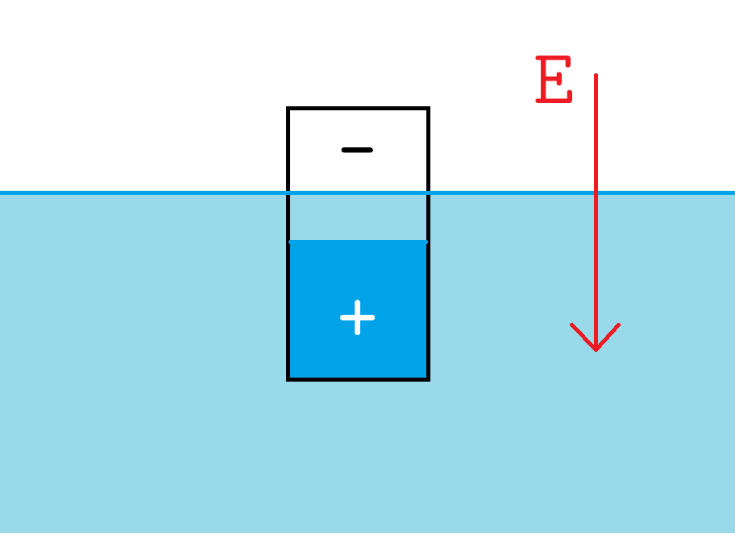

Physics
Uniform Circular Motion
TODO
Rotation of a Rigid Body
Torque

* We'll sometimes confuse the symbol for a vector with its magnitude. It's often clear from context.
Definition. Let $F$ be the force on a rotational rigid body applied at a point a distance $r$ from the pivot. The torque on the body is defined to be $$\t = r \times F$$ with magnitude* $$\t = rF\sin \th,$$ where $\th$ is the angle between $r$ and $F.$
Moment arm:
We can also define the moment arm $d$ as the line from the pivot to the force perpendicular to it. Then $$\t = F r \sin \th = Fd.$$
Angular Acceleration
TODO
Electricity and Magnetism
Question. Why does plastic become negative and glass become positively charged when rubbed with wool and silk?
Insulators and Conductors
The third prong of the plug in electrical sockets connect to a wire that runs deep into the ground somewhere outside the building, to ground appliances. Didn't know that!
Coulomb's Law
Coulomb's Inverse Square Law. Two charges Q and q a distance r apart exert a force on each other with magnitude $$F = \frac{K|Qq|}{r^2} = \frac{1}{4\pi\e} \frac{|Qq|}{r^2}$$ where K is Coulomb's constant and $\e$ is the permittivity constant.
Question. Why inverse square?
Electric Field
Definition. The electric field at a point $r$ is $$E(r) = \frac{F_q(r)}{q} \sim N/C$$ where $F_q(r)$ is the electric force on any test charge q at $r$.
 Curvature of magnetic "space" / field.
Curvature of magnetic "space" / field.
We can also think of $E$ as the force experienced by each unit charge contained in the test charge: $$E(r) = \frac{F_1(r)}{1},$$ kinda like how acceleration is the force per unit mass. E.g. compare the electric field $$E = \frac{KQ}{r^2}$$ generated by a point charge with the acceleration due to a mass $M$: $$a = \frac{GM}{r^2}.$$

Principle of Superposition
Superposition. The whole is equal to the sum of the parts.
Example. Superposition of waves.


Example. Parallelogram law. Why do they---e.g. forces---do that in real life?
Dipoles
Inverse Cube Law for Dipoles and Magnetic Fields
Theorem: Inverse Cube Law for Dipoles. The electric field of a dipole varies inversely as the distance cubed: $$F \propto \frac{Xx}{R^3}.$$
Proof. For simplicity assume the dipole and the test charge are aligned horizontally,* so let the charge configuration be as follows:

Then the force acting on $X$ is $$F = \frac{KXx}{(R - \frac{\delta}{2})^2} - \frac{KXx}{(R + \frac{\delta}{2})^2} = \frac{KXx}{R^2(1 - \frac{\delta}{2R})^2} - \frac{KXx}{R^2(1 + \frac{\delta}{2R})^2}.$$ To simplify this expression we'll use the Binomial Approximation, which says that if $x$ is a small number close to 0 and $\alpha$ is a real number, then $$(1 + x)^\alpha \approx 1 + \alpha x.$$ Applying this to the denominator, we get $$\left(1 \pm \frac{\delta}{2R}\right)^{-2} \approx 1 \mp \frac{\delta}{R}.$$
Now $F$ simplifies to $$F \approx \frac{KXx}{R^2}\left(1 + \frac{\delta}{R}\right) - \frac{KXx}{R^2}\left(1 - \frac{\delta}{R}\right) = \frac{2\delta KXx}{R^3}.$$
Remark. Actually, instead of using the Binomial Approximation there's a sligthly easier way to get the same result that also gives you a better feeling for the estimate---by simple algebraic manipulation: $$F = KXx \left[\frac{1}{(R - \frac{\delta}{2})^2} - \frac{1}{(R + \frac{\delta}{2})^2}\right] = KXx \frac{2R\d}{(R - \frac{\d}{2})^2 (R + \frac{\d}{2})^2}.$$ Since $R \gg \d,$ the denominator is approximately $R^4,$ so this becomes $$F \approx \frac{2\delta KXx}{R^3}.$$
 Notation. We'll switch notations to refer to this drawing.
Notation. We'll switch notations to refer to this drawing.
Now we'll do the same for the case when the test charge is in the plane bisecting the dipole.
First note that along $R,$ the field is zero because the $+q$ charge pushes $Q$ away, while $-q$ pulls it towards the dipole. Therefore the field at $Q$ is only along the $y$-axis, specifically towards the negative $y$-axis: \begin{align*} F &= \frac{KQq}{R^2 + \left( s/2 \right)^2} \frac{s/2}{\sqrt{R^2 + \left( s/2 \right)^2}} + \frac{KQq}{R^2 + \left( s/2 \right)^2} \frac{s/2}{\sqrt{R^2 + \left( s/2 \right)^2}} \\ &= \frac{KQqs}{\left( R^2 + \left( s/2 \right)^2 \right)^{3/2}}. \end{align*} Since $R \gg s,$ again the denominator is approximately $R^3,$ so $$F \approx \frac{KQqs}{R^3}$$ in the negative $y$ direction. Note also that this is half the force when the test charge was along the dipole axis.
One final observation is that when $R \gg s,$ the field line is roughly parallel to the line away from the dipole, which tells us a little bit about the general case when the test charge is not along the axes:

Question. Formula for the general case? Must depend on the angle and be somewhere between $$\frac{2KQqs}{R^3} \quad \text{and} \quad \frac{KQqs}{R^3}.$$


Corollary. Since magnets are always dipoles, magnetic fields also vary inversely as the distance cubed.
Example: atomic dipole. An atom in an electric field becomes a dipole since electrons will want to spend more time "up stream" than "down stream". (By convention upstream refers to the positive source charge.)
Example: Magneto.
Electric Field of a Continuous Charge Distribution
Linear, Surface, and Volumetric Charge Density
Definition. Let $L$ be the length of a one dimensional object $M$ of uniform charge $Q.$ Then the linear charge density of $M$ is defined to be $$\l \equiv \frac{Q}{L}.$$ Surface and volume charge densities $\h$ and $\r$ are defined ananlogously.
Example. Electric Field of a Uniformly Charged Rod
Assume that the test charge is a distance $r$ away, and exactly half way between the rod end points. A tiny slice of the rod has length $dy$ and charge $\l dy,$ so its field on the test charge is $$dE = \frac{K\l dy}{r^2 + y^2} \frac{r}{\sqrt{r^2 + y^2}},$$ and the total field is \begin{align*} E = \int_{-L/2}^{L/2} \frac{K\l r dy}{\left( r^2 + y^2 \right)^{3/2}} = \left.\frac{K\l r y}{r^2\sqrt{r^2 + y^2}}\right|_{-L/2}^{L/2} = \frac{K\l L}{r\sqrt{r^2 + (L/2)^2}}, \end{align*} which simplifies to
Remark. To calculate the field for an infinite uniformly charged rod of charge density $\l,$ in the second last step we can take $L \longrightarrow \infty:$
Note. The field for an infinitely long wire varies as $1/r,$ whereas that of a finite wire varies as $1/r^2.$
Example. Uniformly Charged Ring

Remember the ring has no width: it's just the perimeter of a circle. Let $$\l = Q / 2\p R$$ be the linear charge density along the ring. Then similar to the previous example an infinitesimal arc has length $R d\th$ and charge $\l R d\th,$ so its field is $$dE = \frac{K\l R z d\th}{(R^2 + z^2)^{3/2}}.$$ Therefore the total field of the ring is


Note that for $z \gg R,$ $$E \longrightarrow \frac{KQ}{z^2},$$ so the ring acts like a point charge at long distances, at least along the main axis.
Finally plotting $E$ as a function of $z$ shows that it's zero at the center of the ring, as we expect, and since we already know that the field gets weaker with distance, it must peak somewhere in between, which I hadn't expected!
Exercise. The ring of charge has field $$E = \frac{KQz}{(R^2 + z^2)^{3/2}},$$ so for $z \ll R,$ the force is $$F \approx \frac{KQqz}{R^3}.$$ This is exactly Hooke's law for a spring with spring constant $k = \frac{KQq}{R^3},$ which we already know undergoes harmonic oscillation with frequency $$f = \frac{1}{2\pi} \sqrt{\frac{k}{m}} = \frac{1}{2\pi} \sqrt{\frac{KQq}{m R^3}}.$$
Example. Uniformly Charged Disk and Infinite Uniformly Charged Plane
First we'll calculate the field for a ring on the disk, then integrate that over $r.$ Let $\h$ be the charge density of the disk, $dr$ be the infinitesimal width of the ring and $r$ be its radius. Then the ring has area $2\p r dr$ and charge $$\h 2\p r dr.$$ By the previous uniform ring example, its field on a test charge at distance $z$ is $$dE = \frac{K2\p\h r dr z}{(r^2 + z^2)^{3/2}}.$$ Summing this over all the rings yields the field for the entire disk: \begin{align*} E &= \int_0^R \frac{K2\p\h r z dr}{(r^2 + z^2)^{3/2}} = - \left.\frac{2\p\h K z}{\sqrt{r^2 + z^2}}\right|_0^R \\ &= - \frac{2\p \h K z}{\sqrt{R^2 + z^2}} + \frac{2\p \h K z}{\sqrt{z^2}} \\ &= 2\p \h K \left[1 - \frac{z}{\sqrt{R^2 + z^2}}\right]. \end{align*} In the last step we assumed $z > 0$ to simplify the expression. If $z < 0,$ $E$ would have the same magnitude but reverse direction.

The situation when $z \longrightarrow 0$ is a little unexpected: since $$\frac{z}{\sqrt{R^2 + z^2}} = \frac{1}{\sqrt{(R/z)^2 + 1}} \longrightarrow 0,$$ we have $$E \longrightarrow 2\p\h K,$$ a constant independent of $z,$ as long as $z > 0!$
An alternative formulation gives us the field for an infinite plane: if instead of taking $z\longrightarrow 0$ we take $R\longrightarrow \infty,$ then the field is constant and equal to
regardless of where you are above it.

Another surprise is that at $z = 0,$ the field suddenly drops to 0! This is because in the second step where we calculated the field of a ring, $$dE = \frac{K2\p\h r dr z}{(r^2 + z^2)^{3/2}} = 0.$$ Plus it's also obvious by symmetry. Just kinda odd that nature allows such sharp jumps. But of course this isn't nature: in real life a test charge would never get to $z=0$---there'd be something in the way. Postulative speculations!
At the other end, as $z\longrightarrow\infty,$ $$E = 2\p \h K \left[1 - \frac{z}{\sqrt{R^2 + z^2}}\right] \longrightarrow 0,$$ as we expect. But, we'd like to know a little more about how fast $E$ changes with respect to $z.$ Recall the binomial approximation: $$(1 + x)^\a \approx 1 + \a x$$ for $x$ close to 0, and apply it to $$\frac{z}{\sqrt{R^2 + z^2}} = \left(1 + (R/z)^2\right)^{-1/2} \approx 1 - \frac{R^2}{2z^2}.$$ And so
Therefore $E$ varies as $1/z^2$ for $z \gg R,$ i.e. the uniformly charged disk acts like a point charge far away.
Now that we've seen how a field can vary with distance as $$r^{-1}, r^{-2}, r^{-3},\ldots$$ I'm starting to see why the gravitational and electrical forces vary as $r^{-2}.$ It's the result of some local geometry---analogous to the geometries of the wire, ring, disk, infinite plate, dipole, etc.---at a very small scale, extending to huge distances as $r\longrightarrow \infty.$ If we wanna know why gravity varies as $r^{-2},$ we need to go down to the very bottom and see what it's doing down there.
That's kinda obvious huh.
Corollary. Gravity won't suddenly change its variability as you go farther out, e.g. the Sun's gravity won't start decreasing as $r^{-4}$ when you fly all the way out to Alpha Centauri.

Capacitors are used to bend electrons, e.g. to make CRT TV's. Ferdinand Braun's cold-cathode CRT, 1897. Eighteen ninety-seven! Looks like it only has the vertical capacitor.
Also used to make electrostatic ink-jet printers: a capacitor steers charged ink drops up and down while the print line scans horizontally. Genius, these muggles.
Parallel Plate Capacitor
Corollary. If you had two parallel infinite plates---instead of one---of opposite and equal charge densities, the electric field between the two plates would be twice as big: $$E = 4\pi \h K = \frac{\h}{\e}.$$ Beyond those plates the field is zero because the plates cancel each other out.
Uniformly Charged Sphere
TODO. This one's tough to integrate.
Uniformly Charged Ball
TODO. This one too!
We never do any ununiformly charged object. Hard to describe them at this point. Question. Do they even exist? Cause you'd imagine that it'd spread out.
Charge to Mass Ratio
Particles with different masses and charges but the same charge to mass ratio $\frac{q}{m}$ will experience the same acceleration $$a = \frac{F}{m} = \frac{qE}{m}$$ and follow the same trajectory.
Dipoles in a uniform field
The iron filings are magnetic dipoles, therefore there's no net force on them, which is why they stay in one place.
Question. Why is an iron filing's dipole axis always aligned along the length? Kinda odd.
Maybe it's kinda like how a half filled bottle always floats with the length vertical. When there's no gravity, the positive water and the negative air in the bottle can be in any arrangement. But once you introduce a force field, the water will be pushed down stream, and the water in turn pushes one end of the bottle to align it vertically:
There is no net force on a dipole in a (globally---what about locally?) uniform electric field, because the positive end is pushed down stream, while the negative end is pulled up stream.
The torque on the dipole is due to the two forces $F = qE$ on the two ends of the dipole. Therefore \begin{align*} \t = 2dF &= 2 (\tfrac{1}{2} s \sin \th) qE \\ &= qs E \sin \th \\ &= p E \sin \th \\ &= p \times E, \end{align*} where $p \def qs$ is called the dipole moment. (The torque as drawn in the diagram points into the page.)
Dipole in Nonuniform Electric Field
Dipoles are attracted to the source of the stronger field. WOW dipoles are universal attractors. That's a very useful skill.

Gauss's Law
Whoa, group theory!
Flux
Definition. The electric flux of a constant electric field $E$ through a planar area $A$ is defined to be $$\F = E \cdot A = E A \cos \th$$ where $\th$ is the angle between $E$ and $A.$
Definition. The flux of an arbitrary electric field $E$ through any surface $A$ is $$\F = \int_A E \cdot dA.$$ If $A$ is a closed surface we use a different symbol that means the same thing: $$\F = \oint_A E \cdot dA.$$
Example. If the field is constant on the surface, so that the magnitude $E$ and $\th$ are both constant, then we can move $E \cos \th$ out of the integral:* $$\F = \int_A E \cos \th\ dA = E \cos \th \int_A dA = E A \cos \th,$$ which is the same as for the flat surface. In particular, if the field is tangent to the surface, i.e. it's perpendicular to the normal of $A,$ so that $\cos \th = 0,$ then $$\F = 0.$$ On the other hand, if the field is perpendicular to $A,$ i.e. parallel to the normal, then $\cos \th = 1$ and $$\F = EA.$$
Cylindrical flux

Example. The flux of a field with cylindrical symmetry through a cylinder with the same symmetry is $$\F = E_R A = 2\pi RL E_R,$$ where $R$ and $L$ are the radius and length of the cylinder.
Spherical flux
Example. The flux of a field with spherical symmetry through a sphere with the same symmetry is $$\F = E_R A = 4\pi R^2 E_R,$$ where $R$ is the radius of the sphere and $E_R$ is the field there. E.g. if the field is that of a point charge $q,$ then $$\F = 4\pi R^2 \frac{q}{4\pi \e R^2} = \frac{q}{\e}.$$ In other words, the flux through a sphere around a point charge is independent of the radius.* Makes sense for a static field, one that doesn't change with time. I wonder if there's a time-variant version, e.g. if the charge pulses in time.
In fact, we can generalize this a bit further: the flux of a point charge through any spherical sector is independent of the radius.
Flux through a gaussian surface containing a single charge
Furthermore, since any closed surface can be approximated by many spherical sectors, we have:
Corollary. The flux through any gaussian surface containing a single charge is $$\F = \frac{q}{\e}.$$
Flux through a gaussian surface containing no charge
Lemma. On the other hand, if a gaussian surface contains no charge then the net flux through the surface is zero, because everything flowing in has to flow out.
Gauss's Law
Combining the previous two results and using the principle of superposition, we have:
Theorem. Let $q_1,\ldots,q_n$ be charges with fields $E_1,\ldots,E_n,$ and let $A$ be a gaussian surface. Then the flux through $A$ due to those charges is \begin{align*} \F = \oint_A E \cdot dA &= \oint_A (E_1 + \cdots + E_n) \cdot dA \\ &= \oint_A E_1 \cdot dA + \cdots + \oint_A E_n \cdot dA \\ &= \underbrace{\frac{q_i}{\e} + \cdots + \frac{q_j}{\e}}_\text{charges inside $A$} + \underbrace{0 + \cdots + 0 \vphantom{\frac{}{}}}_\text{charges outside $A$} \end{align*}
If we define $Q = q_i + \cdots + q_j$ to be the total charges inside $A,$ we can write:
$$\F = \frac{Q}{\e}.$$
Question. This works for finitely many discrete charges. What about continuous charges? By the water analogy, it should still be true, e.g. instead of a water faucet (a point charge) imagine a sprinkler-like device or a long pipe with cracks all along its length (line of charge).
Reference
- Walter Lewin's Physics Lectures.
- Knight's Physics for Scientists and Engineers.
- Everything else from the web.